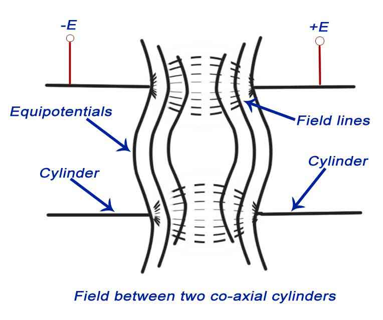

The cathode ray oscilloscope is an instrument which we use in laboratory to display measure and analyze various waveforms of various electrical and electronic circuits. Actually cathode ray oscilloscope is very fast X-Y plotters that can display an input signal versus time or other signal. Cathode ray oscilloscope uses luminous spot which is produced by striking the beam of electrons and this luminous spot moves in response variation in the input quantity. At this moment one question must be arise in our mind that why we are using only an electron beam? The reason behind this is low effects of beam of electrons that can be used for following the changes in the instantaneous values of rapidly changing input quantity. The general forms of cathode ray oscilloscope operate on voltages. So the input quantity that we have talked above is voltage. Nowadays, with the help of transducers it is possible to convert various physical quantities like current, pressure, acceleration etc to voltage thus it enable us to have a visual representations of these various quantities on cathode ray oscilloscope. Now let us look at the constructional details of the cathode ray oscilloscope.
Construction of Cathode Ray Oscilloscope
The main part of cathode ray oscilloscope is cathode ray tube which is also known as the heart of cathode ray oscilloscope.

Let us discuss the construction of cathode ray tube in order to understand the construction of cathode ray oscilloscope. Basically the cathode ray tube consists of five main parts and these main parts are written below:
- Electron gun.
- Deflection plate system.
- Fluorescent screen.
- Glass envelope.
- Base.
Now we discuss each of the above part in detail :
Electron Gun: It is the source of accelerated, energized and focused beam of electrons. It consists of six parts namely heater, a cathode, a grid, a pre-accelerating anode, a focusing anode and an accelerating anode. In order to obtain the high emission of electrons the layer of barium oxide (which is deposited on the end of cathode) is indirectly heated at moderate temperature.The electrons after this passes through a small hole called control grid which is made up of nickel. As the name suggests the control grid with its negative bias, controls the number of electrons or indirectly we can say the intensity of emitted electrons from cathode. After passing through the control grid these electrons are accelerated with the help of pre-accelerating and accelerating anodes. The pre-accelerating and accelerating anodes are connected to a common positive potential of 1500 volts. Now after this the function of the focusing anode is to focus the beam of the electrons so produced. The focusing anode is connected to adjustable voltage 500 volts. Now there are two methods of focusing the electron beam and are written below:
- Electrostatic focusing.
- Electromagnetic focusing.
Here we will discuss electrostatic focusing method in detail.
(a)Electrostatic focusing: We know that the force on an electron is given by –qE, where q is the charge on electron (q=1.6 × 10-19 C), E is the electric field intensity and negative sign shows that the direction of force is in opposite direction to that of electric field. Now we will this force to defect the beam of electrons coming out of electron gun. Let us consider two cases:
Case one: In this case we are having two plates A and B as shown in the figure.

The plate A is at potential +E while the plate B is at potential –E. The direction of electric field is from A plate to plate B at right angle to the surfaces of the plate. The equipotential surfaces are also shown in the diagram which is perpendicular to the direction of electric field. As the beam of electron passes through this plate system, it deflects in the opposite direction of electric field. The deflection angle can be easily varied by changing the potential of the plates.
Case second: Here we have two concentric cylinders with a potential difference applied between them as shown in the figure.

The resultant direction of electric field and the equipotential surfaces are also shown in the figure. The equipotential surfaces are marked by the dotted lines which are curved in shape. Now here we are interested in calculating the deflection angle of electron beam when it passes through this curved equipotential surface. Let us consider the curved equipotential surface S as shown below .The potential on the right side of the surface is +E while the potential on the left side of the surface –E. When a beam of electron is incident at angle A to the normal then it deflects by angle B after passing through the surface S as shown in the figure given below. The normal component of velocity of the beam will increase as force is acting in s direction normal to the surface. It means that the tangential velocities will remain same, so by equating the tangential components we have V1sin (A)=V2sin(B), where V1 is the initial velocity of the electrons, V2 is the velocity after passing through the surface. Now we have relation as sin(A)/sin(B)=V2 / V1.
We can from the above equation see that there is bending of the electron beam after passing through the equipotential surface. Therefore this system is also called focusing system.
Electrostatic Deflection: In order to find out the expression for the deflection, let us consider a system as shown below:
Fig-4
Fig-5
In the above system we have two plates A and B which are at potential +E and 0 respectively. These plates are also called deflection plates. The field produced by these plates is in the direction of positive y axis and there is no force along the x-axis. After deflection plates we have screen through which we can measure net deflection of the electron beam. Now let us consider a beam of electron coming along the x-axis as shown in the figure. The beam deflects by angle A, due presence of electric field and deflection is in the positive direction of y axis as shown in the figure. Now let us derive an expression for deflection of this beam. By the conservation of energy, we have loss in potential energy when the electron moves from cathode to accelerating anode should be equal to gain in kinetic energy of electron. Mathematically we can write,
Where e is the charge on electron,
E is the potential difference between the two plates,
m is the mass of electron,
and v is the velocity of the electron.
Thus, eE is loss in potential energy and
1/2mv1/2 is the gain in kinetic energy.
From equation (1) we have velocity v=(2eE/m)1/2.
Now we have electric field intensity along the y axis is E/d, therefore force acting along the y axis is given by F = eE /d where d is the separation between the two deflection plates.
Due to this force the electron will deflect along the y axis and let the deflection along y axis be equal to D which is marked on the screen as shown in the figure. Due to the force F there is net upward acceleration of the electron along positive y axis and this acceleration is given by Ee/(d × m).Since the initial velocity along positive y direction is zero therefore by equation of motion we can write the expression of displacement along y axis as,
As the velocity along the x direction is constant therefore we can write displacement as,
Where u is velocity of electron along x axis.
From equations 2 and 3 we have,
Which is the equation of trajectory of the electron. Now on differentiating the equation 4 we have slope i.e.
Where l is the length of the plate.
Deflection on the screen can be calculated as,
Distance L is shown in the above figure .Final expression of D can be written as,
From the expression of deflection, we calculate deflection sensitivity as,
Graticule: These are the grid of lines whose function is to serve as a scale when the cathode ray oscilloscope is used for the amplitude measurements. There are three types of graticules and they are written below:
- Internal graticule: Internal graticule as name suggests deposited on the internal surface of the cathode ray tube face plate. There is no problem of parallax errors but we cannot change internal graticules as they are fixed.
- External graticule
Given below is the circuit diagram of cathode ray oscilloscope:
Fig -6
Basic Circuit Diagram of Cathode Ray Oscilloscope
Now we will study the basic circuit diagram of cathode ray oscilloscope under the following main parts.
- Vertical Deflection System: The input signal for examining are fed to the vertical deflection system plates with the help of input attenuator and a number of amplifier stages. The main function of these amplifiers is to amplify the weak the weak signals so that the amplified signal can produce the desirable signals.
- Horizontal Deflection System: Like the vertical system horizontal system also consists of horizontal amplifiers to amplify the weak input voltage signals but in contrast to vertical deflection system, horizontal deflection plates are fed by a sweep voltage that provides a time base as shown above. As shown in the circuit diagram, the saw tooth sweep generator is triggered by the synchronizing amplifier when the sweep selector switch is in the internal position and thus the triggered saw tooth generator gives input to the horizontal amplifier by following this mechanism. Now there are four types of sweeps:
- Free running or recurrent sweep: As the name suggests, the saw tooth waveform is repetitive i.e. a new sweep is started immediately after the previous sweep.
- Triggered sweep: Some time the waveform to be observed may not be periodic so it is desired that the sweep circuit remain inoperative and the sweep be initiated by the waveform under examination. In such cases we use triggered sweep.
- Driven sweep: Generally a driven sweep is used where the sweep is free running but triggered by the signal under test.
- Non saw tooth sweep: This is used for finding the phase difference between the two voltages. Another important application is that we can compare frequency of input voltages using non saw tooth sweep.
- Synchronization: There must be synchronization between the sweep and the signal being measured. Synchronization is done to produce stationary pattern. There are three sources of synchronization which can be selected by synchronization selector and they are written below:
- Internal: In this trigger is obtained from the signal being measured through vertical amplifier.
- External: In this trigger an external trigger source is required.
- Line: In this method trigger is obtained power supply.
- Intensity modulation: Intensity modulation can be done by inserting the signal between the ground and the cathode. Intensity modulation causes the brightening of the display.
- Positioning controls: Position can be control by applying small independent internal direct voltage source s to the deflecting plates and with the help of potentiometer (using it as voltage divider) we can control the position of signal.
- Focus control: Focus can be controlled by changing the focal length of the focusing electrode which acts like a lens and focal length can be changed by the changing potential of the focusing anode.
- Intensity control: The intensity can be varied by changing the grid potential with respect to cathode.
- Calibration circuit: Calibrating voltage has a square shape which is usually internally generated of known amplitude.
- Astigmatism: By adjusting the focus the spot can be made sharp in order to avoid the problem of astigmatism.
 by
by